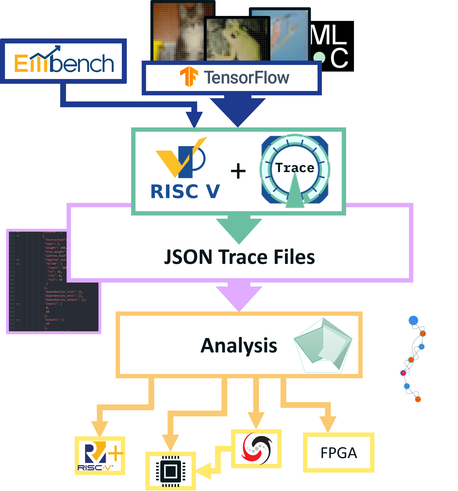
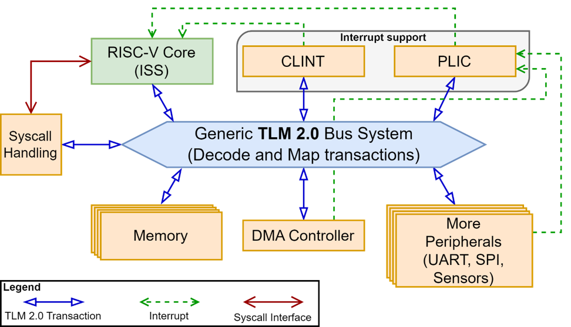

Application-Specific Hardware Optimization using Virtual Prototypes
Identifying the optimal hardware configuration for running complex workloads such as Neural Network (NN) inference on ultra-low-power edge devices is critical for reducing cost and maximizing performance. Tailoring hardware designs to specific applications significantly increases resource utilization, which is essential to meet the strict performance and energy constraints. Unfortunately, exploring the design space at the hardware-level is challenging due to the complexity and time-consuming nature of hardware design and verification processes. In this work, we present an analysis platform based on a RISC-V Virtual Prototype (VP) to systematically identify fine-grained hardware optimization opportunities. The VP models the entire hardware platform while remaining fast and accessible. Combined with a custom execution-trace compression and analysis framework, it enables the capture and processing of billions of executed instructions. Applied to a wide range of representative embedded and edge artificial intelligence workloads from the Embench and MLPerf Tiny benchmark suite, our approach successfully identifies promising optimization opportunities beyond the matrix multiplication kernel that are non-trivial to detect from either the source code or gate-level analysis.

RISC-V
RISC-V is an open and modular instruction set architecture that is well suited for architecture exploration.
Virtual Prototypes
Virtual Prototypes can model complete hardware platforms.
